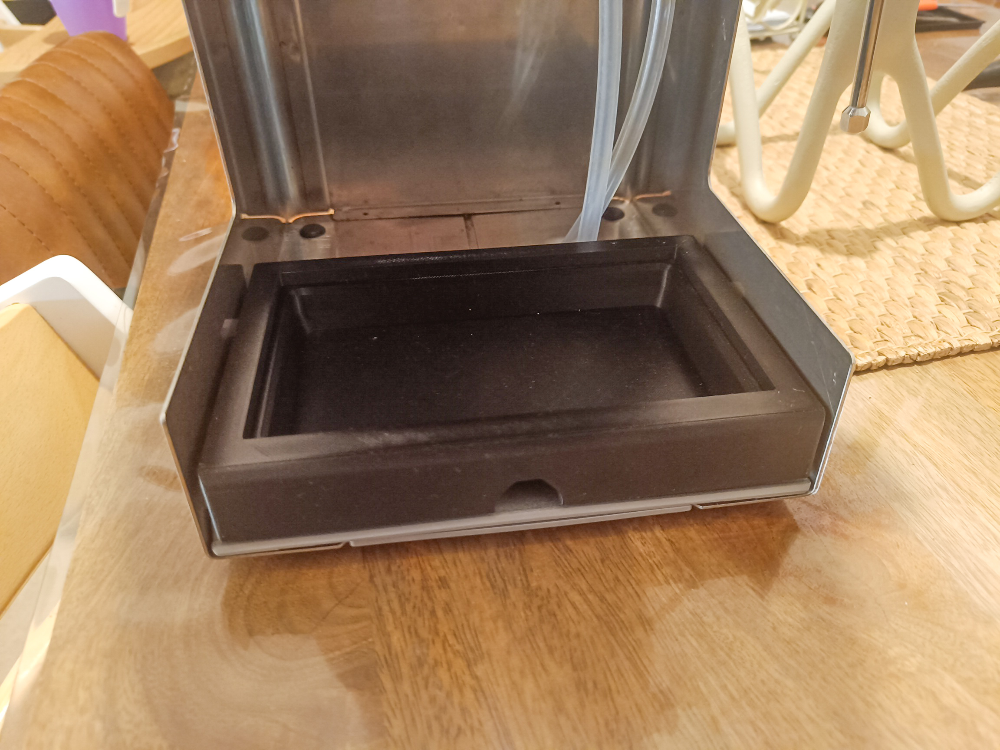

coffee
Brewing methods:
- Gaggia Classic
- Aeropress/Aeropress Go
- Chemex
- French Press
- Hario V60
Grinding methods:
- Niche Zero
- Hario hand grinder
- Sage Smart Grinder Pro
Boiling methods:
- Fellow Stagg EKG Kettle
My Gaggiuino Journey
Jan 2024: Ordered all the parts on AliExpress and DIY-EFI...

Feb 2025: (Day 1) Parts 3D printed by a friend and fellow PhDer. Everything ready...I think.

Troublesome wires. Finally connected (very tentatively and sensitively), but all wired up right at least. The screen powers on correctly.

(Day 2) Got solder and heat shrink wires connectors today. Much better job.

The connector doofers (with blow-torch alternative).
The TOFNLed, before magnets.

The TOFNLed, after magnets.

The beginning of the built-in scales.

Putting the scales parts together.
(Day 3) Getting the wiring and stripboard ready.
Quite genuinely the worst soldering in the world.
Cleaned up a bit.
The carnage.
(Day 4) Need to find screws for this.
Getting the magnets glued into place. And there are the screws...
More wiring...
And more connector doofers...
(Day 5) Doing code and flashing the PCB and screen.
Hardware scales done.
Scales wiring up the back.
Doing internal wiring.
(Day 6: D Day!) Putting all together. Lights are on!

Trying a brew. Everything works...except calibrating the scales.
Here is a video of a shot (with preinfusion). This is with predictive scales, yet they are still pretty accurate (very accurate in this video!). Delish cup of joe.